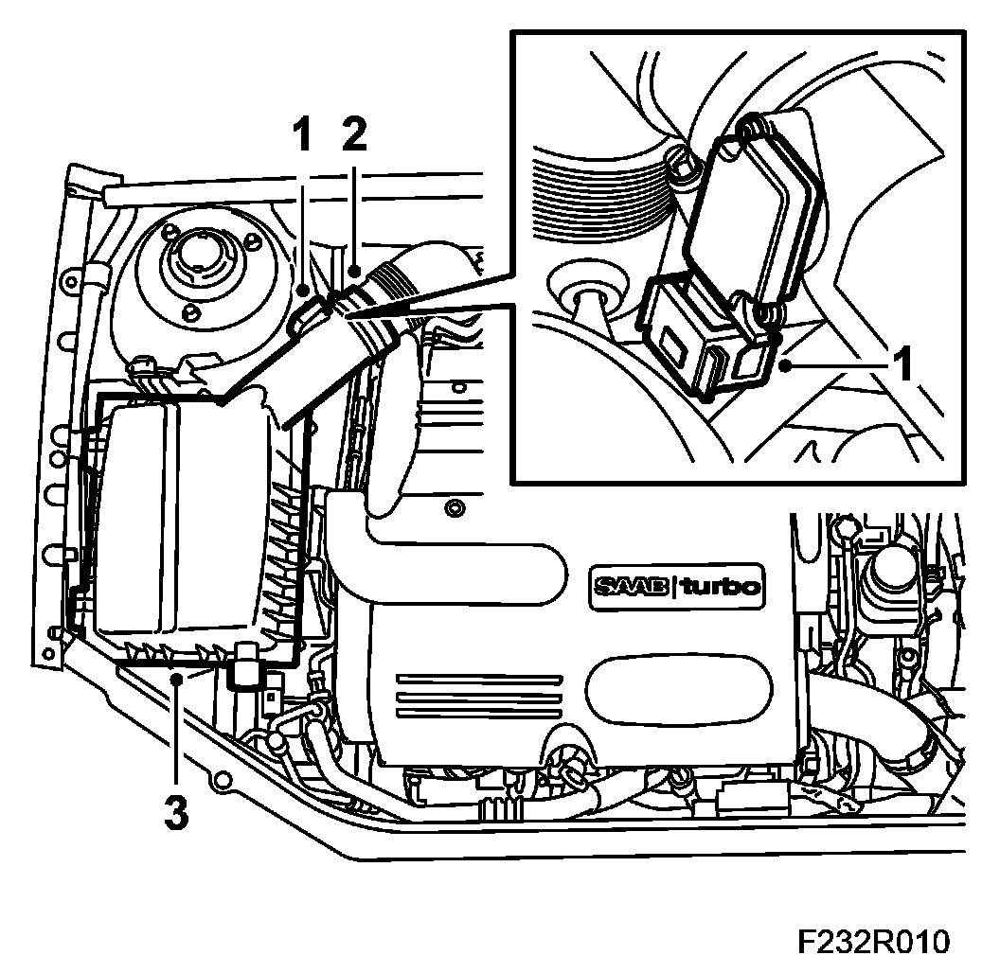
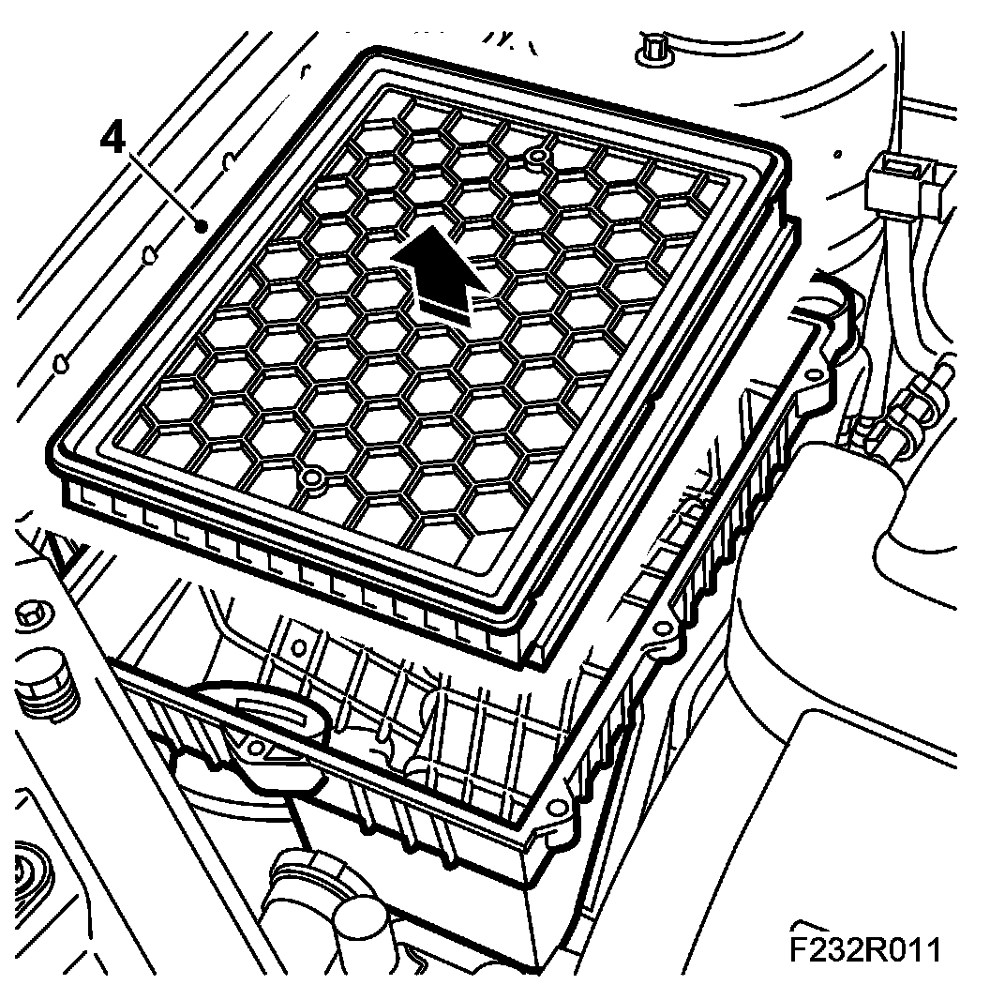
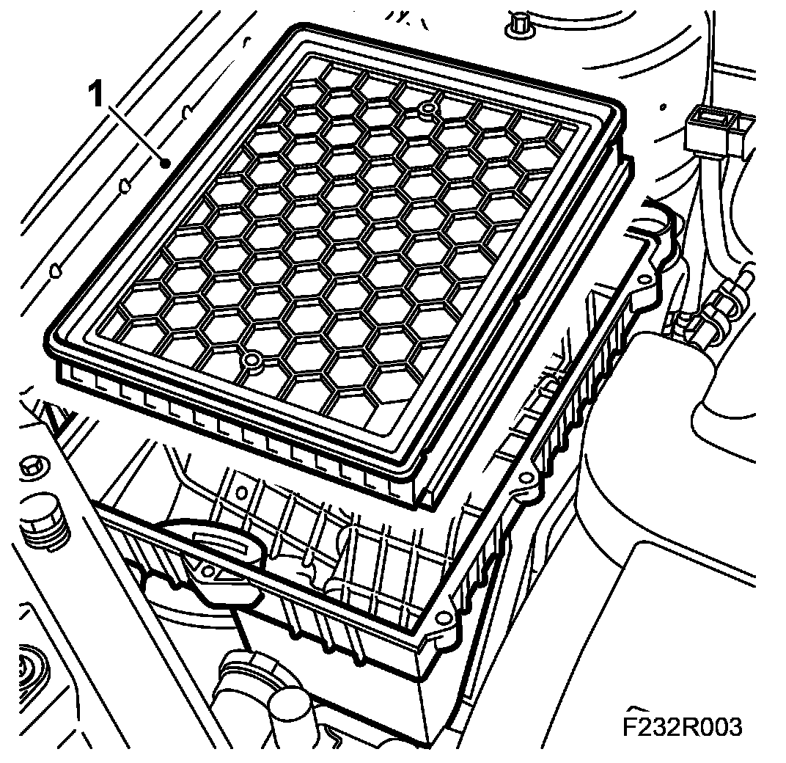
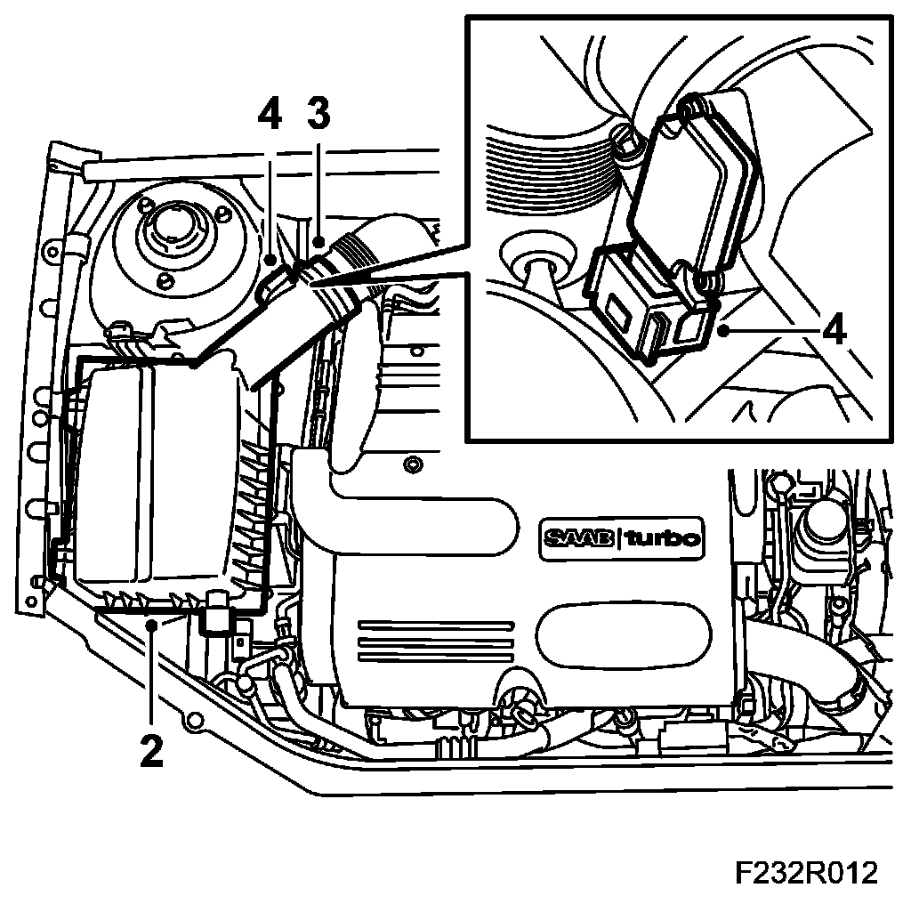

Air Filter Element: Service and Repair
Air Filter, B207
To remove
1. Unplug the connector from the mass air flow sensor.

2. Release the hose from the air cleaner casing cover.
3. Remove the air cleaner casing cover.
4. Remove the filter element.

5. Cover the turbo intake hose and blow the air cleaner casing clean.
To fit
1. Fit a new air filter.

2. Fit the air cleaner casing cover.

3. Connect the hose to the air cleaner casing cover.
4. Plug in the mass air flow sensor connector.